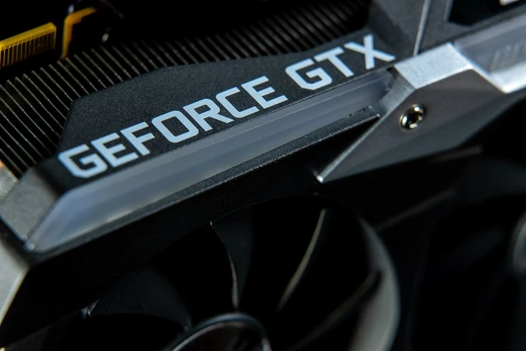
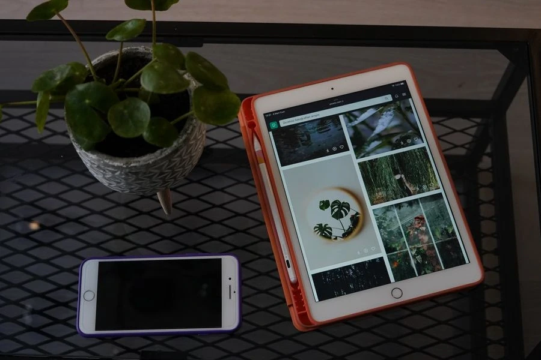
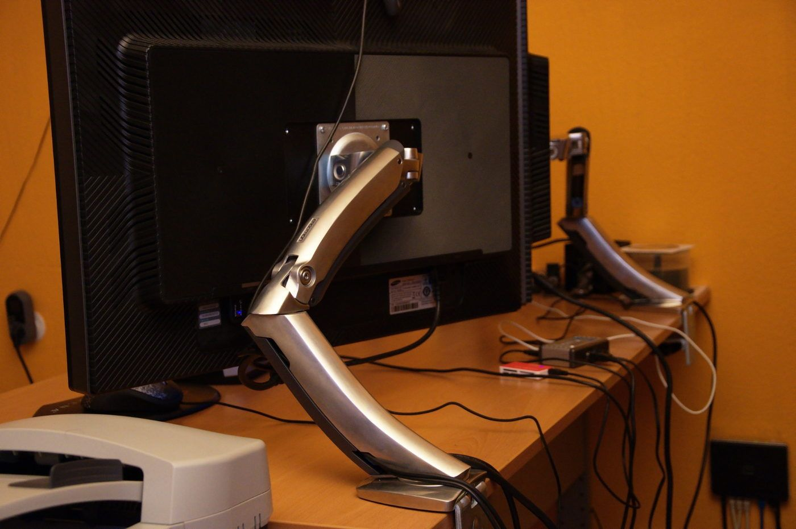
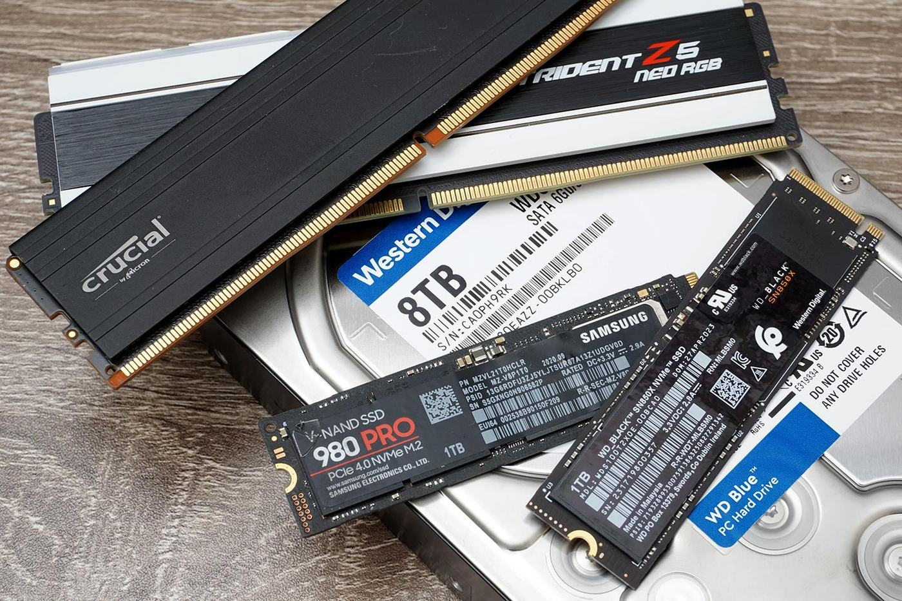
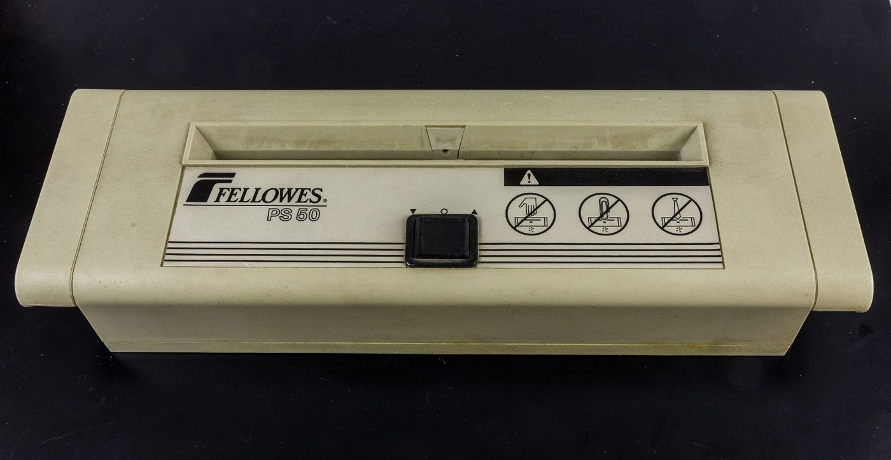
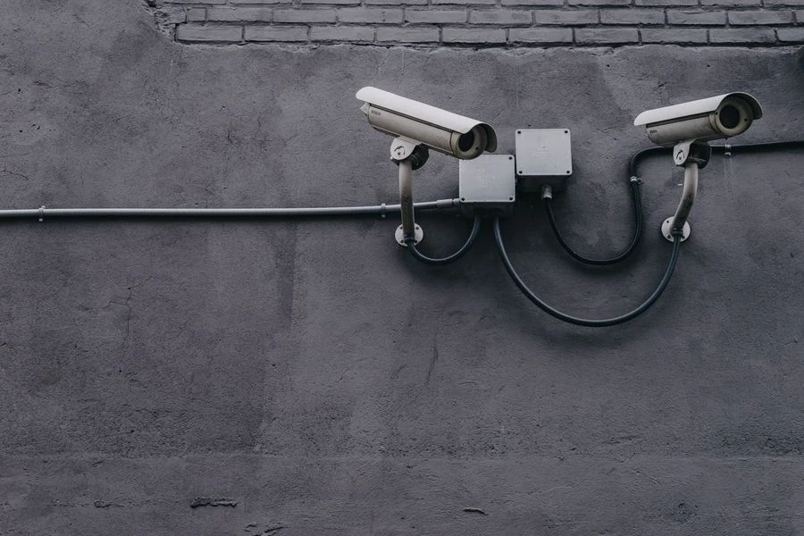

Toner ve Fotokopi Sarf Malzemeleri
Lazer yazıcı ve fotokopi cihazları için orijinal ve muadil tonerler, drum üniteleri ve diğer baskı sarf malzemeleri.
Baskı ve sarf malzemelerinden ağ altyapısına, güvenlik sistemlerinden ofis teknolojilerine kadar 23 ürün grubunu inceleyin.
Yazıcılar, fotokopi makineleri, plotter ve 3D yazıcılar ile bu cihazlara uygun sarf malzemeleri. Toner, mürekkep, kâğıt, etiket, filament ve reçine ihtiyaçlarınız için tedarik seçenekleri.
Lazer yazıcı ve fotokopi cihazları için orijinal ve muadil tonerler, drum üniteleri ve diğer baskı sarf malzemeleri.

Mürekkep püskürtmeli yazıcılar, tanklı cihazlar ve plotter sistemleri için kartuş, mürekkep, baskı kafası ve ilgili sarf ürünleri.

Kurumsal kullanım için yazıcı, fotokopi ve plotter cihazları; 3D yazıcılar, uyumlu filamentler ve baskı reçineleri.

Ofis kâğıtları, yapışkanlı etiketler, termal rulolar, plotter kâğıtları ve geniş format baskı malzemeleri.
Dizüstü ve masaüstü bilgisayarlar, donanım bileşenleri, tabletler ve akıllı telefonlar ile çevre birimleri ve ergonomik çalışma ürünleri için tedarik seçenekleri.

Dizüstü, masaüstü, All-in-One ve mini bilgisayarlar; monitör, klavye, fare, kulaklık ve bilgisayar aksesuarları.

İşlemci, anakart, RAM, ekran kartı, SSD, dahili disk, güç kaynağı, kasa ve soğutma bileşenleri.

Tabletler, akıllı telefonlar ve dayanıklı tabletler; modele uygun kılıf, ekran koruyucu, şarj cihazı ve taşınabilir şarj ürünleri.

Monitör kolları, ekran ve dizüstü bilgisayar standları, ergonomik klavye ve fareler ile ayak ve bilek destekleri.
Kablolu ve kablosuz ağ cihazları, kablo ve bağlantı ürünleri, telefon ve santral sistemleri ile kesintisiz güç ve güç dağıtım ürünleri için tedarik seçenekleri.

Switch, yönlendirici, modem ve kablosuz erişim noktaları; PoE ve ağ bağlantı ihtiyaçlarına uygun cihaz seçenekleri.

Ağ, fiber optik, görüntü ve USB kabloları; patch panel, konnektör, adaptör, dönüştürücü ve kablo düzenleme ürünleri.

IP, analog ve kablosuz telefonlar, telefon santralleri, konferans telefonları ve sistemle uyumlu kulaklık ve aksesuarlar.

Kesintisiz güç kaynakları, modele uygun UPS aküleri, regülatörler, aşırı gerilim korumalı prizler ve güç dağıtım ürünleri.
Yazılım lisansları ve abonelikler, depolama ve bellek ürünleri, sunucu ve NAS cihazları ile belge tarama ve dijital arşiv ürünleri için tedarik seçenekleri.
Ofis, işletim sistemi, güvenlik, yedekleme ve belge yönetimi yazılımları; ürüne uygun lisans, abonelik ve yenileme seçenekleri.

SSD'ler, dahili ve harici diskler, RAM modülleri, USB bellekler ve hafıza kartları için kapasite ve cihaz uyumuna uygun seçenekler.

Tower ve rack sunucular, NAS cihazları, uyumlu sunucu bileşenleri, rack kabinler ve altyapı aksesuarları.

Belge, kitap, fotoğraf ve kart tarayıcıları; modele uygun tarama, OCR ve belge yönetimi yazılımları.
Ofis makineleri, sunum ve görüntülü toplantı ekipmanları, profesyonel ekranlar ve dijital bilgilendirme ürünleri için tedarik seçenekleri.

Kâğıt imha, laminasyon, ciltleme ve kesme makineleri; hesap makineleri, para sayma cihazları ve uyumlu sarf malzemeleri.

Projeksiyon, sunum ve interaktif ekranlar; toplantı kameraları, mikrofonlar, hoparlörler ve uyumlu bağlantı ürünleri.

Profesyonel bilgilendirme ekranları, dijital tabela ürünleri, medya oynatıcılar ve modele uygun ekran askı ve taşıyıcı sistemleri.
Kamera ve kayıt cihazları, geçiş kontrol ve alarm ürünleri, barkod sistemleri ve satış noktası ekipmanları için tedarik seçenekleri.

IP ve analog kameralar, DVR/NVR kayıt cihazları, uyumlu kayıt diskleri ve kamera bağlantı aksesuarları.

Kartlı, şifreli ve modele göre biyometrik geçiş terminalleri; PDKS, elektrikli kilit, alarm paneli, sensör ve siren ürünleri.

1D/2D barkod okuyucular, etiket ve fiş yazıcılar, el terminalleri ve uyumlu baskı sarfları.

POS bilgisayarları, müşteri ekranları, para çekmeceleri, fiş yazıcılar ve elektronik tartılar; satış noktaları için uyumlu perakende ekipmanları.
Burada adı geçmeyen bir ürün için de talebinizi iletebilirsiniz. Ürünün adını veya modelini paylaşmanız yeterlidir; talebiniz değerlendirilir.
Ürün gruplarını ve örnek markaları bu sayfada inceleyebilir, ihtiyacınız olan ürün için bizimle iletişime geçebilirsiniz.
İletişim kurun